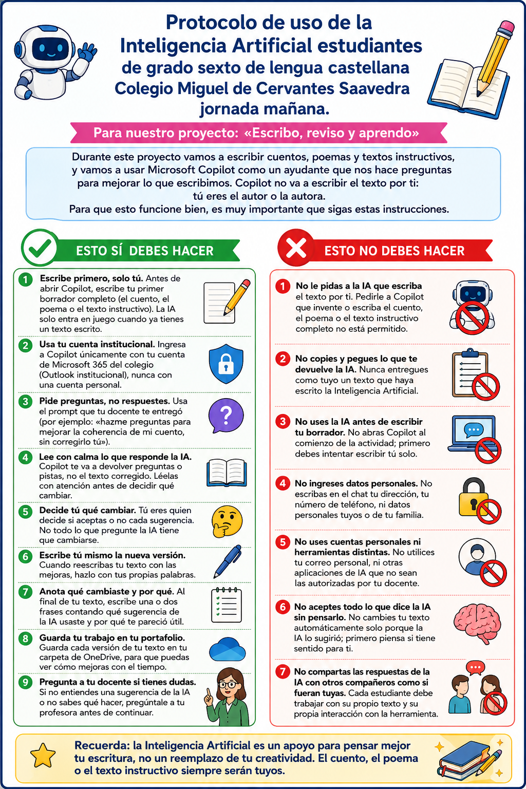

Tu historia. Tus decisiones. Tu aprendizaje.
Escribe primero con tus propias ideas. Después usa Copilot como un tutor que te hace preguntas y pistas para ayudarte a revisar. Tú decides qué cambiar.
Avanza en 8 etapas
Sigue la ruta paso a paso. Tus decisiones de escritura son tuyas y los recursos del proyecto están disponibles aquí para consultarlos durante el trabajo.
📘 Mi patrón escritural
Usa este andamio para planear, escribir y revisar tu cuento. El documento indica que tu cuento debe tener mínimo 200 palabras, entre 2 y 4 personajes y los elementos: lugar, tiempo, espacio, narrador, conflicto y desenlace.
🧠 Antes de escribir
- Elige el narrador.
- Define lugar, espacio y tiempo.
- Construye tus personajes.
- Define el conflicto.
- Organiza inicio, nudo y desenlace.
✍️ Durante la escritura
- Párrafo 1: inicio.
- Párrafo 2: desarrollo del conflicto.
- Párrafo 3: clímax y desenlace.
🔍 Después de escribir
- Comprueba las 200 palabras.
- Revisa lugar, tiempo, espacio y personajes.
- Comprueba conflicto y estructura.
- Revisa conectores, ortografía y título.
🧠 Fase 1 · Me preparo
✍️ Fase 2 · Escribo
🟢 Párrafo 1
Presenta lugar, tiempo, protagonista y espacio.
🟡 Párrafo 2
Desarrolla el conflicto y las acciones.
🔴 Párrafo 3
Incluye clímax, resolución y cierre.
🔍 Fase 3 · Reviso mi borrador
🤖 Fase 4 · Ahora sí: uso la IA
📌 Protocolo de uso de la IA
Antes de usar Copilot, lee el protocolo completo. Recuerda: tú eres el autor o la autora.

Microsoft Copilot
Usa tu cuenta institucional de Microsoft 365. Copilot debe funcionar como tutor de escritura: preguntas, pistas y observaciones; no como escritor de tu cuento.
Microsoft indica que Copilot puede abrirse desde el navegador y que la experiencia de cuenta escolar depende de la licencia y configuración institucional.
1. Copia tu Versión 1
Abre tu documento Word/OneDrive, selecciona todo el cuento y cópialo. En Copilot, pega primero el cuento.
2. Elige un prompt
✏️ Fase 5 · Reescribo
Escribe tú mismo la nueva versión y guárdala como Versión 2.
⭐ Fase 6 · Versión final
Sube o abre tu Versión 2, utiliza el nuevo prompt entregado por tu docente, revisa nuevamente y guarda tu producción como Versión Final.
Versión 1
Mi primer borrador.
Versión 2
Mi texto mejorado.
Versión Final
Mi producción final.
📊 Fase 7 · Evalúo mi cuento
La rúbrica tiene un máximo de 50 puntos y 7 criterios.
💭 Fase 8 · Reflexiono
Compara tus tres versiones y analiza tu progreso.